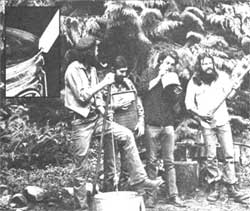
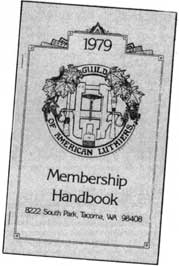

Even homesteaders need to relax and enjoy themselves from time to time, right? And almost everybody these days wants to cut his or her cost of living. So how about a little do-it-yourself entertainment!
And that's what this column is all about. Down-home music that you can make . . . and the instruments (which, in some cases, you can also make!) to play that music on.
We may also publish some songs, discuss music as a potential home business, run discographies, bibliographies, and/or include whatever other do-it-yourself music topics you'd like to see.
The important thing is that this is your column. If you like it, write to me and let me know. If you have some ideas for this feature, let me know that. I'm open to any suggestions or information you care to contribute. I'll even try to answer your questions about down-home music . . . but - both for the benefit of all MOTHER's readers and to ease my correspondence load - I'll deal with those questions, whenever possible, here in this column . . . rather than in personal letters.
Address your correspondence for this column and this column only-to Marc Bristol, 31722 N.E. 180th Place, Duvall, Wash. 98019.
Most homegrown musicians dream - at one time or another - of building their own guitars or mandolins or banjos . . . completely from scratch. And, since the publication of the first modern book on the subject (Classic Guitar Construction by Irving Sloan, E.P. Dutton, 1966), increasing numbers of folks have been building their own musicmakers. In fact, it seems that all the do-it-yourself movement needed to really "catch fire" was some how-to information . . . and when Mr. Sloan provided the necessary data, homegrown craftsfolk started turning up everywhere!
One sure sign of the number of people who are "building their own" is the fact that there's now an organization - with over 1,300 members - which functions as an information-sharing forum for "luthiers". Tim Olson, a founder of the Guild of American Luthiers and the editor of its quarterly magazine, defines luthier as "a person who handmakes any instrument" . . . although the term was originally applied only to lute builders. (Tim doesn't limit his definition to folks who work without the aid of power tools, but he does insist that a true luthier carries out each and every step in the instrument's construction him- or herself.)
Not long ago, I visited Tim's shop to talk about instrument construction. What follows is an edited excerpt from our conversation.
BRISTOL: Tim, though luthiers build many types of instruments, I know that the guitar is your favorite. When did you first encounter one?
OLSEN: When I was in third grade, my older brother got an Epiphone arch-top guitar. It was an inexpensive instrument, but I thought it was terrific! So I started messing around with pieces of plywood, trying to build my own guitar. My initial efforts were, as you can imagine, dismal failures . . . but I kept on trying.
I began work on my first solid-body electric instrument when I was in the fifth grade, and finished it three years later. That project was followed by the building of several acoustic, guitars, and - by the time I was 17 - I was able to start making instruments for money!
BRISTOL: Were you building only electric and flat-top guitars back then?
OLSEN: Yes . . . a friend did commission me to build an arch-top - which, as you know, is my favorite type of guitar - in 1971. I sold it to him for $160, and he was satisfied, but the experience taught me that I had absolutely no idea about how to build an arch-top . . . and there wasn't any information available for me to learn from, either.
Then, in late 1977, I got the chance to acquire the skill I needed. At that time, a customer brought a treasured arch-top (Jimmy D'Aquisto, who is today's foremost guitarmaker, had built it!) into my shop and asked me to do setup work on the instrument. I ended up telephoning D'Aquisto . . . to talk over the job before I started in on it.
The craftsman was a super, helpful guy, too . . . but I finally had to say, "Jimmy, this is a pretty sophisticated instrument . . . I don't want to take a chance on messing up your work." He answered, "Well, then come out and see me, and we'll go over it together." So although his shop was some 3,200 miles away...
BRISTOL:. . . you couldn't pass up the opportunity. Tell me, did meeting with D'Aquisto increase your understanding of the arch-top design?
OLSEN: Not only that . . . it changed my whole sphere of knowledge! As a result of the trip, I not only sold an article to Guitar Player magazine about Jimmy's techniques, but I've also recently been able to accept commissions to build a couple of arch-tops myself!
BRISTOL: I'm fascinated with such guitars, too, although I admit that my interest has always seemed amusing to me . . . because they're so feminine in form.
OLSEN: Well, the reason for such "delicacy" is that the "rounded" guitar actually evolved from the violin, whereas flattop instruments are descendants of the original "classic" guitar.
Unfortunately, arch-top players today tend to fall into one of two categories: Either they use an electric instrument - with a lot of hardware and flat wound strings that spoil the arch-top's wonderful acoustics - or they're flat-top pickers who're just looking for a different sound. I call the latter group "searchers" . . . more often than not, they end up playing the arch-top as they would their "usual" guitars, and then judging its sound on that basis.
There actually is a niche - most often found in jazz - that the arch-top acoustic fills better than any other instrument . . . and if a player is willing to let the guitar do what it does best, he'll soon see why I think it's the king of guitars. It's really an evolutionary step above the flat-top . . . especially from the builder's point of view.
BRISTOL: Why do you say that?
OLSEN: Well, when you're finished constructing one, you've got the same advantages that you'd have with a violin: a sound chamber that's unimpeded, a fret board that lies above it, a tailpiece that hovers overhead, and a pick guard-if you choose to add one-that attaches to the fret so it doesn't interfere with the sound.
BRISTOL: That sort of construction provides a great tonal advantage, doesn't it?
OLSEN: Yes, because not only is it good to have the instrument's sound unhindered, but - once you've built an arch-top guitar - you can change the tailpiece's angle and length, or the bridge's weight and height . . . you can do all kinds of amazing things that actually tailor the instrument to its player!
Of course, I'm just getting started at building arch-tops myself . . . other instruments still account for most of my orders.
BRISTOL: Do you wait for a commission before building an instrument?
OLSEN: Right. I don't design anything till somebody makes a down payment. Then I work up a drawing and - after the customer approves the design - I build the instrument. Once it's done, I collect the rest of my money.
BRISTOL: Are you making a living by building instruments?
OLSEN: Well, let me answer that by saying that I think I could support myself by designing and building guitars . . . but I know some 1,400 instrumentmakers - either by having actually met them or through correspondence - and only four of them make a living building guitars by hand and selling them to people through their own shops.
BRISTOL: Of course, you're not including folks who might put out one guitar after another-of identical design-like a one-person assembly line.
OLSEN: No, those people aren't luthiers by my definition of the term . . . although I often have more than one guitar-but of differing and original designs-underway at a given time myself.
BRISTOL: Well, I don't suppose it'd be practical to just work on one instrument for eight hours a day till it was done.
OLSEN: No, it wouldn't, because you have to leave any project alone every once in a while . . . in order for the glue or lacquer to dry, and so forth. And that free time can be spent working on another instrument.
BRISTOL: It seems as if your operation is pretty efficient. Tell me, what changes would be necessary if you were to earn your entire living making guitars?
OLSEN: For one thing, I'd have to work at least 50 or 60 hours a week. I'd also have to give up traveling, and I'd need other people - mainly my wife - to take over certain chores, such as the business's bookkeeping, for me. I could probably turn out a dozen instruments a year, or maybe as many as 15 if I really knocked myself out, and sell them for an average of $1,000 apiece. Of course, I'd have to pay for all my materials and overhead out of that take.
Right now I put only about half my time into guitar construction. The rest is spent on my work for the Guild of American Luthiers, my writing projects, and the things I do to promote the instrument-building art.
BRISTOL: We've pretty much restricted our discussion to guitarmakers, but doesn't the Guild include folks who make other instruments, too?
OLSEN: Right. We have banjo builders, there's a large group who craft mandolins and violins, and even the lutemakers are well represented. In fact, there seems to be a growing national interest in - and an increasing market for - lutes and hand-built instruments of all kinds. So, if any of your readers has a hankerin' to make his or her own lute, guitar, banjo, or whatever . . . I'd say, "Jump right in and do it! "
IN CLOSING . . .
Of course, the material presented above represents no more than a third of my conversation with Tim. I may have a chance to share more of the discussion later, but I'd like to take the last bit of space in this column to tell you about the Guild of American Luthiers itself.
It costs $10 to join the organization, and all members receive the Guild Quarterly magazine . . . which contains how-to construction and repair articles along with news on the luthier scene around the country, advertisements (they can be taken out by members for half price, and the classifieds are free), and some intriguing "et cetera".
Guild memberships are figured by the calendar year, too. In other words, when you join you get to choose whether your membership will start at the beginning of the year in progress or at the onset of the next one.
There's also an annual Guild convention, an affair which has been growing steadily: Last year's took place at Boston University and included 88 exhibitors, over 150 handmade instruments, and some 450 people. The 1980 convention will be held July 18-20 in the Palace of Fine Arts in San Francisco . . . and it should be a very worthwhile gathering.
All in all, the Guild is just about a must-join organization for anyone who makes - or is even interested in crafting - stringed instruments. You can write the organization, either to join or (with a self-addressed, stamped envelope and a dollar to reimburse the staffers for their time) for information. Just address any such mail to: Guild of American Luthiers, 8222 South Park, Tacoma, Washington 98408.
|
 Marc Bristol and other Washington State grassroots musicians wail away on a gutbucket, washboard, and jug ( the axe is a gag). For Marc's original homegrown music column ? which featured gutbucket, washboard, jug, kazoo, musical saw, and spoons ""makin' and playin'"" instructions ? see MOTHER NO. 50. Inset shows gutbucket ""notch and bevel"" details. |
 |
|